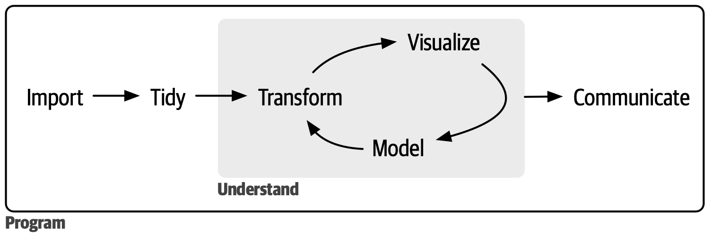

Review of multiple linear regression
Jan 17, 2024
Announcements
HW 01 due Wed, Jan 24 at 11:59pm
- Released Thursday morning
Labs start Thursday
Check website for office hours schedule
Added a Slack channel
#internships-research-opportunities(optional)
Computing set up
Topics
Define statistical models
Motivate generalized linear models and multilevel models
Review multiple linear regression
Statistical models
Models and statistical models
Model: Mathematical description of the process we think generates the observations \(y_1, \ldots, y_n\)
Statistical model: Model that includes an equation describing the impact of explanatory variables (systematic part) and probability distributions for parts of the process that are assumed to be random variation (random part)
Statistical models
A statistical model must include
- The observations
- The deterministic (systematic) part of the process
- The random part of the process with a statement of the presumed probability distribution
Example
Suppose we have the model for comparing two means:
\[ y_{ij} = \mu_i + \epsilon_{ij} \]
where
- \(i = 1, 2\): group
- \(j = 1, \ldots, n\): observation number
- \(n_i\): number of observations in group \(i\)
- \(\mu_i\): mean of group \(i\)
- \(y_{ij}\): \(j^{th}\) observation in the \(i^{th}\) group
- \(\epsilon_{ij}\) : random error (variation) associated with \(ij^{th}\) observation
Example
\[ y_{ij} = \mu_i + \epsilon_{ij} \]
\(y_{ij}\): the observations
\(\mu_i\): deterministic part of the model, no random variability
\(e_{ij}\) : random part of the model, indicating observations vary about their mean
Typically assume \(\epsilon_{ij}\) are independent and identically distributed (i.i.d.) \(N(0, \sigma^2)\)
Practice
Suppose \(y_{ij}'s\) are observed outcome data and \(x_i's\) are values of the explanatory variable. Assume a linear regression model can used to describe the process of generating \(y_{ij}'s\) based on the \(x_i's\).
- Write the specification of the statistical model.
- Label the 3 components of the model equation (observation, systematic part, random part)
- What is \(E(y_{ij})\), the expected value of the observations?
Motivating generalized linear models (GLMs) and multilevel models
Assumptions for linear regression
Linearity: Linear relationship between mean response and predictor variable(s)
Independence: Residuals are independent. There is no connection between how far any two points lie above or below regression line.
Normality: Response follows a normal distribution at each level of the predictor (or combination of predictors)
Equal variance: Variability (variance or standard deviation) of the response is equal for all levels of the predictor (or combination of predictors)
Assumptions for linear regression

Linearity: Linear relationship between mean of the response \(Y\) and the predictor \(X\)
Independence: No connection between how far any two points lie from regression line
Normality: Response \(Y\) follows a normal distribution at each level of the predictor \(X\) (red curves)
Equal variance: Variance of the response \(Y\) is equal for all levels of the predictor \(X\)
Violations in assumptions
Do wealthy households tend to have fewer children compared to households with lower income? Annual income and family size are recorded for a random sample of households.
- The response variable is number of children in the household.
- The predictor variable is annual income in US dollars.
Which assumption(s) are obviously violated, if any?
Violations in assumptions
Medical researchers investigated the outcome of a particular surgery for patients with comparable stages of disease but different ages. The 10 hospitals in the study had at least two surgeons performing the surgery of interest. Patients were randomly selected for each surgeon at each hospital. The surgery outcome was recorded on a scale of 1 - 10.
- The response variable is surgery outcome, 1 - 10.
- The predictor variable is patient age in years.
Which assumption(s) are obviously violated, if any?
Beyond linear regression
When drawe conclusions from linear regression models, we do so assuming LINE are all met
Generalized linear models require different assumptions and can accommodate violations in LINE
- Relationship between response and predictor(s) can be nonlinear
- Response variable can be non-normal
- Variance in response can differ at each level of predictor(s)
- The independence assumption must hold!
Multilevel models are used to model data that violate the independence assumption, i.e. correlated observations
Multiple linear regression
Data: Kentucky Derby Winners
Today’s data is from the Kentucky Derby, an annual 1.25-mile horse race held at the Churchill Downs race track in Louisville, KY. The data is in the file derbyplus.csv and contains information for races 1896 - 2017.
Response variable
speed: Average speed of the winner in feet per second (ft/s)
Additional variable
winner: Winning horse
Predictor variables
year: Year of the racecondition: Condition of the track (good, fast, slow)starters: Number of horses who raced
Data
Data science workflow
Image source: Wickham, Çetinkaya-Rundel, and Grolemund (2023)
Exploratory data analysis (EDA)
Once you’re ready for the statistical analysis (explore), the first step should always be exploratory data analysis.
The EDA will help you
- begin to understand the variables and observations
- identify outliers or potential data entry errors
- begin to see relationships between variables
- identify the appropriate model and identify a strategy
The EDA is exploratory; formal modeling and statistical inference are used to draw conclusions.
Univariate EDA

Univariate EDA code
p1 <- ggplot(data = derby, aes(x = speed)) +
geom_histogram(fill = colors$green, color = "black") +
labs(x = "Winning speed (ft/s)", y = "Count")
p2 <- ggplot(data = derby, aes(x = starters)) +
geom_histogram(fill = colors$green, color = "black",
binwidth = 2) +
labs(x = "Starters", y = "Count")
p3 <- ggplot(data = derby, aes(x = condition)) +
geom_bar(fill = colors$green, color = "black", aes(x = ))
p1 + (p2 / p3) +
plot_annotation(title = "Univariate data analysis")Bivariate EDA

Bivariate EDA code
p4 <- ggplot(data = derby, aes(x = starters, y = speed)) +
geom_point() +
labs(x = "Starters", y = "Speed (ft / s)")
p5 <- ggplot(data = derby, aes(x = year, y = speed)) +
geom_point() +
labs(x = "Year", y = "Speed (ft / s)")
p6 <- ggplot(data = derby, aes(x = condition, y = speed)) +
geom_boxplot(fill = colors$green, color = "black") +
labs(x = "Conditions", y = "Speed (ft / s)")
(p4 + p5) + p6 +
plot_annotation(title = "Bivariate data analysis")Scatterplot matrix
A scatterplot matrix helps quickly visualize relationships between many variable pairs. They are particularly useful to identify potentially correlated predictors.

Scatterplot matrix code
Create using the ggpairs() function in the GGally package.
Multivariate EDA
Plot the relationship between the response and a predictor based on levels of another predictor to assess potential interactions.

Multivariate EDA code
library(viridis)
ggplot(data = derby, aes(x = year, y = speed, color = condition,
shape = condition, linetype = condition)) +
geom_point() +
geom_smooth(method = "lm", se = FALSE, aes(linetype = condition)) +
labs(x = "Year", y = "Speed (ft/s)", color = "Condition",
title = "Speed vs. year",
subtitle = "by track condition") +
guides(lty = FALSE, shape = FALSE) +
scale_color_viridis_d(end = 0.9)Candidate models
Model 1: Main effects model (year, condition, starters)
Model 2: Main effects + \(year^2\), the quadratic effect of year
Model 3: Main effects + interaction between year and condition
Application exercise
Inference for regression
Use statistical inference to
Determine if predictors are statistically significant (not necessarily practically significant!)
Quantify uncertainty in coefficient estimates
Quantify uncertainty in model predictions
If LINE assumptions are met, we can use inferential methods based on mathematical models. If at least linearity and independence are met, we can use simulation-based inference methods.
Inference for regression
When LINE assumptions are met…
Use least squares regression to obtain the estimates for the model coefficients \(\beta_0, \beta_1, \ldots, \beta_j\) and for \(\sigma^2\)
\(\hat{\sigma}\) is the regression standard error
\[ \hat{\sigma} = \sqrt{\frac{\sum_{i=1}^n(y_i - \hat{y}_i)^2}{n - p - 1}} = \sqrt{\frac{\sum_{i=1}^n e_i^2}{n-p-1}} \]
where \(p\) is the number of non-intercept terms in the model (e.g., \(p = 1\) in simple linear regression)
Goal is to use estimated values to draw conclusions about \(\beta_j\)
- Use \(\hat{\sigma}\) to calculate \(SE_{\hat{\beta}_j}\) . Click here for more detail.
Hypothesis testing for \(\beta_j\)
- State the hypotheses. \(H_0: \beta_j = 0 \text{ vs. } H_a: \beta_j \neq 0\), given the other variables in the model.
Calculate the test statistic.
\[ t = \frac{\hat{\beta}_j - 0}{SE_{\hat{\beta}_j}} \]
Calculate the p-value. The p-value is calculated from a \(t\) distribution with \(n - p - 1\) degrees of freedom.
\[ \text{p-value} = 2P(T > |t|) \hspace{4mm} T \sim t_{n-p-1} \]
State the conclusion in context of the data.
- Reject \(H_0\) if p-value is sufficiently small.
Confidence interval for \(\beta_j\)
The \(C\%\) confidence confidence interval for \(\beta_j\) is
\[\hat{\beta}_j \pm t^* \times SE_{\hat{\beta}_j}\]
where the critical value \(t^* \sim t(n-p-1)\)
General interpretation for the confidence interval [LB, UB]:
We are \(C\%\) confident that for every one unit increase in \(x_j\), the response is expected to change by LB to UB units, holding all else constant.
Application exercise
Measures of model performance
\(R^2\): Proportion of variability in the response explained by the model
- Will always increase as predictors are added, so it shouldn’t be used to compare models
\(Adj. R^2\): Similar to \(R^2\) with a penalty for extra terms
\(AIC\): Likelihood-based approach balancing model performance and complexity
\(BIC\): Similar to AIC with stronger penalty for extra terms
Which model do you choose?
Use the glance() function to get model summary statistics
| model | r.squared | adj.r.squared | AIC | BIC |
|---|---|---|---|---|
| Model1 | 0.730 | 0.721 | 259.478 | 276.302 |
| Model2 | 0.827 | 0.819 | 207.429 | 227.057 |
| Model3 | 0.751 | 0.738 | 253.584 | 276.016 |
Characteristics of a “good” final model
Model can be used to answer primary research questions
Predictor variables control for important covariates
Potential interactions have been investigated
Variables are centered, as needed, for more meaningful interpretations
Unnecessary terms are removed
Assumptions are met and influential points have been addressed
Model tells a “persuasive story parsimoniously”